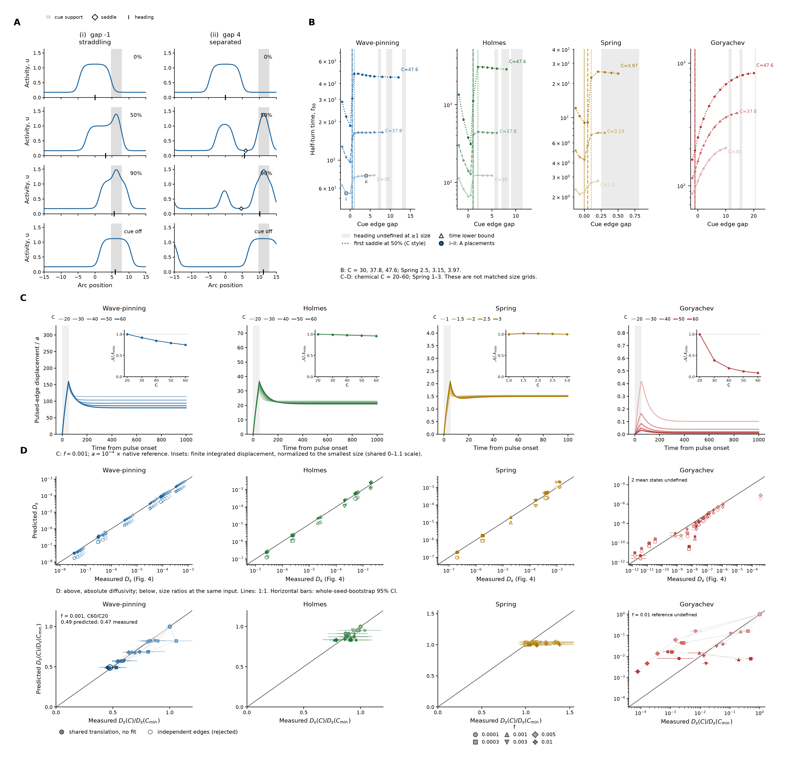

(3.1)
(3.1)Generated 2026-10-23T19:10:05.359619+00:00; document producer finished. Simulation and analysis completion are recorded with each figure.
Integrated manuscript outline · Figures, legends and pilots · Prospective pilot table
Figure and legend · Full supplement

A. Wave-pinning activity at C = 30 for a cue straddling the incumbent boundary (i, gap −1) or separated from it (ii, gap 4). Rows show 0%, 50% and 90% of cue-direction heading, then the relaxed cue-free profile. Grey: cue support; diamonds: inter-region saddles; ticks: heading.
B. Half-turn time versus cue-edge gap from the incumbent’s 10%-contrast boundary. Increasing sizes use lighter solid, intermediate dashed and darker dotted curves; chemical C = 30, 37.8, 47.6, Spring 2.5, 3.15, 3.97. Vertical lines mark the first resolved two-region saddle at half-turn; grey bands mark undefined heading at ≥1 size; triangles are time lower bounds. Enlargement slows both turning routes. C–D use different size grids, so these panels do not establish a matched-size relation between strong-cue turning and weak-pulse response.
C. Control-subtracted displacement of the pulsed half-contrast boundary divided by peak input a, at f = 0.001. A Gaussian pulse has SD ℓ = 1.5 and duration τ = 50 (Spring 0.15 and 5); peak a = 10⁻⁴ of the native input reference. Shades denote chemical C = 20–60 or Spring resting C = 1–3. Insets show displacement integrated to 20τ, divided by pulse dose aτ, then normalized to the smallest size on a common 0–1.1 axis. Largest/smallest terminal gains are 0.701 Wave-pinning, 0.914 Holmes, 0.989 Spring and 0.0878 Goryachev. Both edges and half/double amplitudes are checked in the supplement.
D. Above: predicted versus Figure 4 physical tracked drift for f ≤ 0.01. Filled markers retain shared translation; open markers retain the rejected independent-edge candidate. Measured pulse gain sets response amplitude; the unchanged native linearization supplies spatial shape, and the exact input covariance supplies forcing statistics. Nothing is fitted to drift. Below: predicted versus measured Dₛ(C)/Dₛ(Cmin) at the same f, removing the dominant input-strength scaling. Wave-pinning at f = 0.001 gives C60/C20 = 0.49 predicted and 0.47 measured. Lines: 1:1; bars: whole-seed-bootstrap 95% CI. Goryachev C20/C30 at f = 0.01 have no polarized mean-state boundary; the normalized prediction at that f also lacks its C20 reference.
Wave-pinning, Holmes and Spring have shared-translation prediction/observation medians 1.021, 1.080 and 1.069. Resolved quarter-window edge correlations are 0.980, 0.983 and 0.997 in the two exemplar seeds, refuting edge independence. Goryachev retains large quantitative disagreement. Tracked drift is conditional on trackable domains and is distinct from total heading decay.
Two cellular assays follow: vary photoactivation offset from straddling to separated placement and measure half-turn time; separately apply a weak brief boundary pulse and track both boundaries through withdrawal. The second assay measures susceptibility and common translation; it does not uniquely assign Figure 2 mechanism classes. Native units are not calibrated across models.
(3.1)Open markers test independent edges; filled markers retain the untuned shared-translation covariance.
 (3.2)
(3.2)Measured terminal displacement per pulse dose supplies amplitude; the unchanged native response supplies spatial shape. The covariance derivation is in the methods and supplement.
Figure and legend · Full supplement

A. Drifting peaks, same-rate null relocations and perimeter-rate null relocations give size exponents 2, 0 and −1. Null kymograph widths follow circumference; time increases upward. Autocorrelations C(ℓ) use solid C20 and dotted C60 curves. The null relocations are illustrative whole-peak moves, distinct from measured dominant-region replacements and birth-to-takeover events.
B. Larger rings retain heading across stronger fluctuating input. Input fraction f sets the ensemble mean to f times the native reference (Wave-pinning 0.1; Holmes 1; Spring 4; Goryachev 6.4). Input is positive lognormal, mean × exp(σZ−σ²/2), with unit-variance Gaussian driving field Z and σ=1. The spatial parameter ℓ and OU correlation time τ are 1.5 and 50 in chemical models; Spring uses basal-physical ℓ=0.15 and τ=5, with physical ℓ scaling with its changing circumference. Local size exponents α and noise-tolerance folds use model hues and light-to-dark circumference ramps. Open symbols in the exponent and drift panels identify conditions flagged as forced by the frozen matched-mean/lower-noise controls; open diamonds in the fold panel identify Goryachev irrespective of forcing; vertical intervals are pointwise 95% whole-history bootstrap intervals. Boundary triangles retain off-scale values. 125/260 local neighborhoods resolve, including 11 Goryachev neighborhoods. Largest-size tolerance folds are Wave-pinning 2.373, Holmes 2.155, Spring 3.088 and Goryachev 4.122. f₁/₂ is the first input crossing of C(ℓ)=0.5 at reference lag 2000 (Spring 200); Spring circumference is multiplied by 20 only in the fold panel.
C. Matched small- and large-ring kymographs are centred on their initial activity heading to the nearest spatial bin. Time increases upward; black outside ticks mark persistent dominant-region replacements. Activity scales are shared within Wave-pinning, Holmes and Spring; Goryachev uses 0–9.2 at C20 and 0–83 at C60. Ensemble C(ℓ) curves are below. A low-contrast initial heading may have weak biological meaning despite a defined numerical centre.
D. Physical within-tenure drift Dₛ is normalized by the smallest size at the same input. Unity gives the equal-physical-drift geometric expectation α=2. Weak-input log–log fits for f≤0.01 give exponents Wave-pinning 1.96–1.99; Holmes 1.94–1.95; Spring 1.87–1.93. The second row shows the existing event-based predicted/observed decay only where f≤0.01 and multiple regions occupy at most 5% of frames. 45/47 eligible point comparisons lie within 15% (Wave-pinning 16/16; Holmes 15/16; Spring 14/14; Goryachev 0/1). These point predictions assign the scored-event mean angular loss to unscored replacements; this remains an assumption. Goryachev uses separate logarithmic ordinate ranges: 10⁻⁷–2 for normalized drift and 0.003–3.3 for decay ratio; other models use 0.2–8 and 0.3–3.3. The actual mean circumference, C̄, enters physical-to-angular conversion. Figure 3D independently predicts this measured drift from deterministic edge responses.
E. i, Certified no-parent secondary births per actual perimeter-time: new tracks persist at least five frames, have a preceding incumbent, and have conservative support enclosures disjoint from all previous regions. Rates are lower bounds; discarded masks prevent exact birth/split classification. ii, Observed incidence of five-frame global dominance by 20τ (1000 chemical units; 100 Spring), conditional on certified births with that follow-up. Inputs f>0.01 are pooled. Distance d subtracts estimated incumbent half-width (preceding full-basin amount divided by twice global contrast h) from the shortest centroid arc. Vertical intervals are 95% whole-history bootstrap intervals. A lower finite-horizon incidence can reflect delayed or less frequent takeover; lifetime success remains unidentified. Figure 2B–C motivates separating initiation from incumbent removal. iii, Native-amplitude-aware signed heading-loss allocation over the condition’s analysis lag. M, shared-region motion; A, coexisting amount; B, track membership including unresolved splits/mergers; R, amplitude/shape/background remainder. Point-region Shapley changes are scaled by mean native endpoint moment amplitude, so pure rigid translation gives M=1, R=0. Components sum exactly to observed heading loss but are descriptive, convention-dependent shares. The symmetric-log color scale is linear within ±0.05 and spans ±1; dots indicate values outside ±1, gray unavailable pairs. The unit-normalized point-region diagnostic and its normalization artefact are preserved in the supplement; eligibility and equations are detailed in Methods.
 (4.1)
(4.1)Q is the normalized point-region moment; P=M₁/M₀ is measured from the native field. Its amplitude r prevents the unit-modulus single-region normalization artefact.
 (4.2)
(4.2)The three ΔQ components use the symmetric Shapley convention for motion, coexisting amount and membership; r̄ is mean endpoint native amplitude. R closes the native moment change and includes amplitude variation, shape and background. This is an accounting convention, not causal attribution.
 (4.3)
(4.3)Pooled signed fractions are sums of L_j divided by total measured heading loss. They retain cancellation, can exceed one, and depend on the stated accounting convention; they are not causal shares.
 (4.4)
(4.4)C(ℓ) is activity-heading autocorrelation; C̄ is actual mean circumference. Endpoint eligibility uses |P|≥0.1. Drift closure is shown only at f≤0.01 and multiple-region fraction≤0.05.
Archived revision brief · Original task prompt · Delivery and identification limits · Claude reviews and point-by-point responses · Source and protected-section receipt